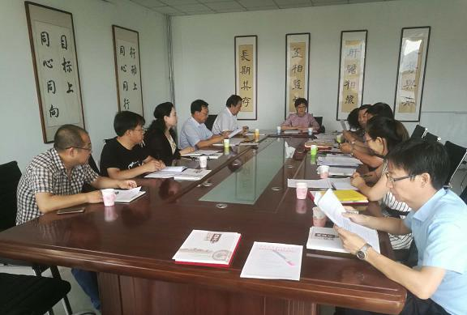

7月1日，农工党赤峰市委召开第十次全委（扩大）会议，会议由农工党赤峰市委主委、赤峰市人民政府副市长李艳茹主持，农工党赤峰市委全体委员出席。

会议传达了农工党自治区委《关于印发农工党内蒙古区委第七届委员会专门工作委员会和联络工作办公室设置及组成人员名单的通知》和《关于开展2018年度理论征文活动的通知》，商讨了农工党赤峰市委2018年重点调研课题，听取了关于“我市乡村振兴的短板瓶颈和建议”的课题调研情况，安排部署社会服务月活动和参加市委统战部举办的纪念改革开放40周年文艺演出相关事宜。
李艳茹就下半年农工党市委工作提出四点要求，一是巩固共同思想政治基础，认真学习中共十九大精神，尤其是深入学习领会习近平新时代中国特色社会主义思想，履行好新时代参政党职能。二是要为赤峰市经济社会发展贡献智慧和力量，围绕“三大攻坚战”凝心聚力，建言献策。三是加强调查研究，围绕中心工作，着重研究解决事关改革、发展、稳定大局的突出问题，着重研究解决群众关心热难重点问题，“忙在点子上，谋在关键处”。四是强化自身建设，从队伍建设、作风建设、基层组织建设等方面入手，打造高素质的参政党。
会议还选举白凤强同志担任农工党市委会第六届委员，任命白凤强担任第六届委员会秘书长，刘灵艳担任第六届委员会副秘书长，并发展8名新成员加入农工党组织